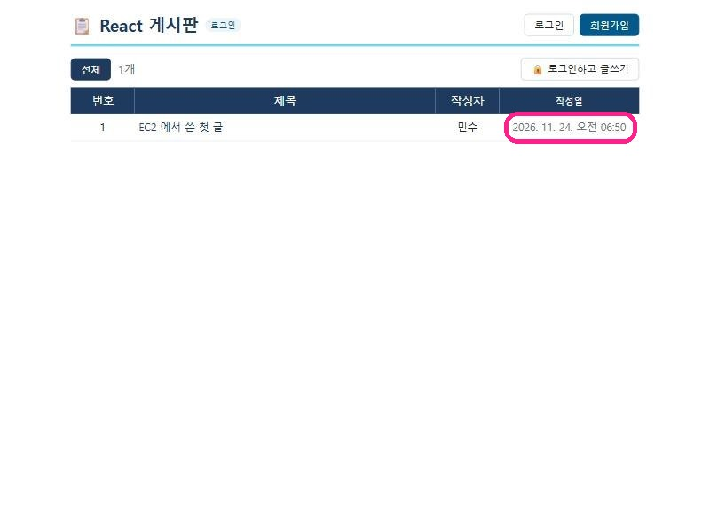
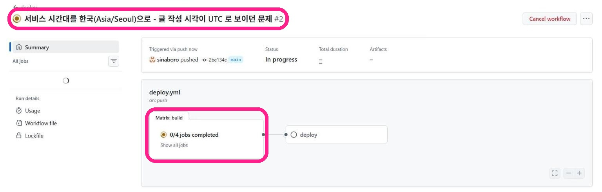
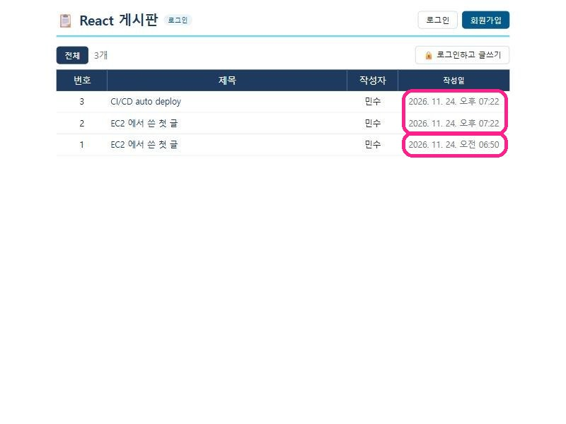
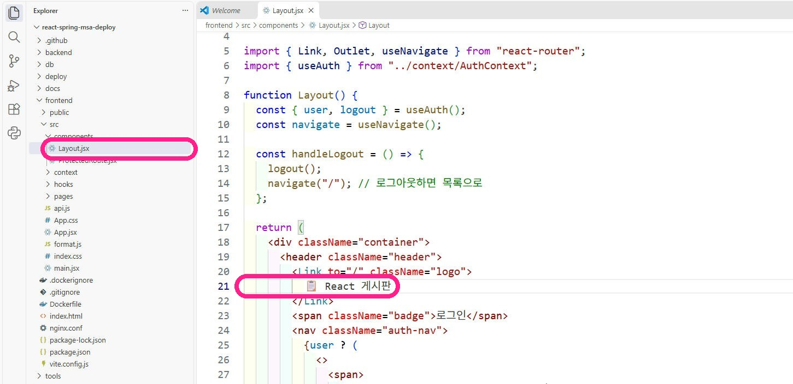
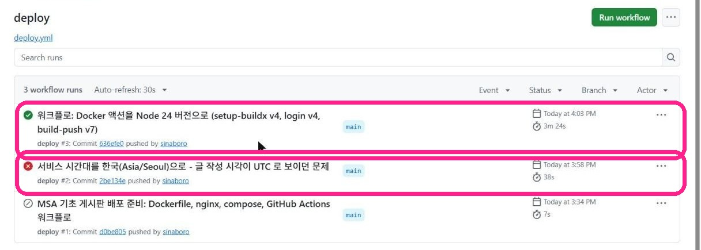
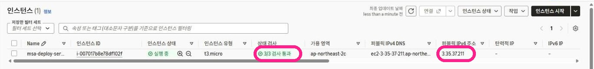

7장. 자동 배포 확인 - push 하면 서버가 바뀐다
학습 목표
- 코드를 고쳐
git push하고, 몇 분 뒤 서버가 저절로 바뀌는 것을 확인한다. - 실패한 워크플로의 로그를 읽고 원인을 찾는다.
- EC2 를 중지했다 켜면 IP 가 바뀌는 문제와 고치는 방법을 안다.
7-1. 교안을 만들 때 실제로 고친 버그 - 9시간 늦은 글
5장에서 처음 배포하고 글을 썼더니 작성일이 이상했다. 오후 3시 50분에 쓴 글이 오전 06:50 으로 보였다.

까닭은 컨테이너의 시간대다. Docker 이미지(eclipse-temurin, Ubuntu 기반)는 기본 시간대가 UTC(세계 표준시)이고, 한국(KST)은 UTC 보다 9시간 빠르다. post-service 는 LocalDateTime.now() 로 "지금 시각" 을 저장하는데, 컨테이너 안의 "지금" 이 UTC 였던 것이다. 내 PC 의 IntelliJ 에서 돌릴 때는 Windows 의 시간대(KST)를 따랐기 때문에 몰랐다.
[배포 개념] 내 PC 와 서버는 환경이 다르다. 시간대, 글자 인코딩, 메모리, 파일 경로처럼 내 PC 에서는 저절로 맞던 것이 서버에서 어긋난다. 그래서 2장에서 내 PC 에서도 컨테이너로 돌려 보는 것이다. 이 버그도 컨테이너로 돌린 내 PC 에서 이미 재현됐다.
고친 방법은 compose 파일의 서비스 3개에 환경 변수 한 줄을 더한 것이다. (deploy/docker-compose.prod.yml 과 docker-compose.yml 둘 다)
post-service:
environment:
TZ: Asia/Seoul # 시간대를 한국으로 (없으면 UTC 라 글 작성 시각이 9시간 늦게 보인다)
그리고 push 했다. 이 수정은 이미 저장소에 들어 있으니 아래 명령은 따라 치지 않는다. 강사가 한 일을 보여 주는 것이다. 직접 해 보는 것은 7-2 다.
[PS] (강사가 한 일 - 읽기만) 커밋하고 push
git add . # 바뀐 파일을 모두 "이번 커밋에 넣을 목록"(스테이지)에 올린다. 점(.) = 지금 폴더 아래 전부
git commit -m "서비스 시간대를 한국(Asia/Seoul)으로 - 글 작성 시각이 UTC 로 보이던 문제" # 커밋 메시지가 Actions 실행 제목이 된다
git push # GitHub 에 올린다. main 에 올라가는 순간 GitHub 가 deploy.yml 의 on: push 를 보고 워크플로를 시작한다
push 하자마자 Actions 탭에 새 실행이 생겼다. 제목은 커밋 메시지다.

이 실행(#2)은 사실 빨간색으로 실패했다. Docker Hub 토큰이 Read-only 였기 때문이다(3장, 7-3 의 표). 토큰을 Read & Write 로 바꾼 뒤 다음 push(#3)가 3분 남짓 만에 초록색으로 끝났고, 시간대를 고친 설정도 그때 서버에 들어갔다. 새 글을 써 보니 시각이 맞았다.

1번 글은 여전히 오전 06:50 이다. 시간대를 고친 것은 "앞으로 저장할 시각" 이고, 이미 DB 에 저장된 값은 바꾸지 않기 때문이다. (실제 서비스라면 데이터를 고치는 SQL 을 따로 돌린다)
docker compose up -d 는 설정(environment)이 바뀐 서비스 3개만 새로 만들고 db 는 그대로 두었다. 그래서 회원과 글이 모두 남아 있다.
7-2. 직접 해 보기 - 제목 바꾸기
이제 내 손으로 해 보자. 화면 맨 위 제목을 바꾼다.
[PS] VS Code 로 저장소 폴더 열기
cd C:\study\react-spring-msa-deploy
code . # 점(.) = 지금 폴더. 이 폴더를 VS Code 로 연다 (code 명령이 없다고 나오면 VS Code 에서 파일 → 폴더 열기)
왼쪽 탐색기(Explorer)에서 frontend → src → components 를 펼쳐 Layout.jsx 를 열고, 21번째 줄의 제목 한 줄을 고친 뒤 저장(Ctrl+S) 한다. 탭 이름 옆에 동그라미(●)가 없어지면 저장된 것이다.

<Link to="/" className="logo">
📋 React 게시판 - 자동 배포 성공! {/* ← "📋 React 게시판" 뒤에 글자를 덧붙였다 */}
</Link>
위의
{/* ... */}는 교안 설명용 주석이다. 파일에는 넣지 않아도 된다(넣어도 화면에는 보이지 않는다).
[PS] 커밋하고 push - 처음 push 하면 GitHub 로그인 창(브라우저)이 뜰 수 있다. 로그인하면 다음부터는 묻지 않는다
git add frontend/src/components/Layout.jsx # 고친 파일 하나만 올린다
git commit -m "제목 바꾸기 - 자동 배포 확인" # Actions 화면에서 이 제목으로 실행이 보인다
git push # push → GitHub Actions 가 빌드·배포 → 2~3분 뒤 서버에 반영 (Actions 탭에서 지켜본다)
- GitHub 저장소의 Actions 탭에서 실행을 지켜본다. build 4개 → deploy 순서로 초록색이 켜진다.
- 초록색으로 끝나면
http://<EC2주소>를 새로 고침 한다. 제목이 바뀌어 있다. - 로그인 상태, 글 목록은 그대로다.
push 할 때
Author identity unknown이 나오면 Git 에 내 이름·이메일을 한 번 알려 준다.git config --global user.name "내이름",git config --global user.email "내GitHub이메일"을 치고git commit부터 다시 한다.rejected ... fetch first가 나오면 GitHub 쪽에 내 PC 에 없는 커밋이 있는 것이니git pull후 다시git push한다.
이번에는 React 만 고쳤지만 워크플로는 이미지 4개를 모두 다시 굽는다. 백엔드 3개는 소스가 그대로라 캐시 덕분에 몇십 초 만에 끝나고, Docker Hub 에 올릴 때도 바뀐 층(layer)이 없어 금방 끝난다. 서버의 docker compose pull 도 바뀐 frontend 만 새로 받는다.
브라우저가 옛 화면을 기억(캐시)하고 있으면 바로 안 바뀔 수 있다. Ctrl+Shift+R 로 강력 새로 고침 한다.
7-3. 실행 기록 읽기
Actions 탭 → 왼쪽 deploy 를 누르면 지금까지의 실행이 모두 보인다.

교안을 만들 때 남은 기록을 아래에서 위로 읽어 보자.
| 실행 | 결과 | 까닭 |
|---|---|---|
| #1 | 회색 (7초) | 처음 push 할 때는 Variables 가 없어서 if: 조건으로 건너뜀. 실패가 아니다 |
| #2 | 빨강 (38초) | Docker Hub 토큰이 Read-only → push 단계에서 insufficient scopes (3장) |
| #3 | 초록 (3분 24초) | 토큰을 Read & Write 로 바꾸고 다시 push. 첫 빌드라 캐시가 없어 오래 걸림 |
실패한 실행을 누르면 어느 잡의 어느 스텝에서 멈췄는지 빨간 ✕ 로 보인다. 그 스텝을 펼치면 로그 끝부분에 오류 메시지가 있다. 맨 아래 몇 줄부터 읽는 것이 요령이다.
7-4. EC2 를 껐다 켰더니 배포가 실패한다 - IP 가 바뀐다
요금을 아끼려고 EC2 를 중지(Stop)했다가 다시 시작(Start)하면 퍼블릭 IP 가 바뀐다. 교안을 만들 때도 실제로 겪었다.

이때 생기는 일은 셋이다.
- 예전 주소(
http://43.201.21.211)로는 게시판이 열리지 않는다. - 워크플로의 deploy 잡이 SSH 키 준비 나 파일 복사 스텝에서 실패한다. (
Process completed with exit code 255- ssh 가 접속하지 못했다는 뜻) GitHub 의EC2_HOST가 아직 예전 주소이기 때문이다. - 내 PC 에서 새 주소로
ssh하면 처음 접속처럼yes/no를 묻는다. 반대로 AWS 가 예전 주소를 다른 사람의 서버에 주었다면, 예전 주소로 접속할 때REMOTE HOST IDENTIFICATION HAS CHANGED!경고가 나온다.
고치는 방법
- EC2 콘솔에서 새 퍼블릭 IP 를 확인한다.
- GitHub 저장소 → Settings → Secrets and variables → Actions → Variables →
EC2_HOST의 연필(편집) → 새 IP → Update variable. - Actions → deploy → Run workflow 로 다시 배포한다. 코드는 그대로이니 push 대신 손으로 돌린다.
[PS] 내 PC 에 남은 예전 서버 지문 지우기 (경고가 나올 때)
# ssh 는 처음 접속한 서버의 "지문" 을 내 PC 의 known_hosts 파일에 기억해 둔다.
# 같은 IP 에 다른 서버가 앉으면 지문이 달라져 "가짜 서버일 수 있다" 며 접속을 막는다 → 옛 지문을 지우면 다시 접속된다
ssh-keygen -R 43.201.21.211 # -R : 이 주소의 지문을 지운다 (주소는 내 예전 IP 로)
데이터는 남는다. 중지·시작은 컴퓨터를 껐다 켠 것과 같다. 디스크(EBS)와 Docker 볼륨은 그대로이고, 컨테이너는
restart: unless-stopped덕분에 Docker 가 켜지면서 저절로 다시 켜진다. 사라지는 것은 IP 뿐이다. 반대로 종료(Terminate) 는 컴퓨터를 버리는 것이라 디스크까지 지워진다(8장).[배포 개념] 바뀌지 않는 주소가 필요하면 - AWS 의 탄력적 IP(Elastic IP) 를 인스턴스에 붙이면 중지·시작해도 IP 가 그대로다. 실제 서비스는 여기에 도메인(예:
board.example.com)을 연결해서 사람은 도메인만 기억하게 한다. 탄력적 IP 도 공인 IP 요금이 붙고, 인스턴스에서 떼어 둔 채 남겨도 요금이 나가니 실습 뒤에는 꼭 릴리스한다.
7-5. 손으로 다시 배포하기
다음 같은 때는 코드를 고치지 않고 Run workflow 로 다시 돌린다.
- 7-4 처럼
EC2_HOST만 바꿨을 때 - Secrets 값(토큰 등)을 고쳤을 때
- 서버를 새로 만들었을 때 (스왑·Docker 설치까지 한 뒤)
GitHub Actions 가 .env 를 매번 새로 만들어 보내므로, 서버를 새로 만들어도 5장의 scp 를 다시 할 필요가 없다. 5-1 ~ 5-3(접속, 스왑, Docker 설치)만 하고 Run workflow 를 누르면 된다.
확인 문제
- 서비스 컨테이너의 시간대가 UTC 일 때 한국에서 오후 3시에 쓴 글은 몇 시로 저장되나?
- 시간대를 고친 뒤에도 1번 글의 시각이 그대로인 까닭은?
- EC2 를 중지했다 시작한 뒤 deploy 잡이
exit code 255로 실패했다. 무엇을 고쳐야 하나? - EC2 를 "중지" 하는 것과 "종료" 하는 것의 차이는?